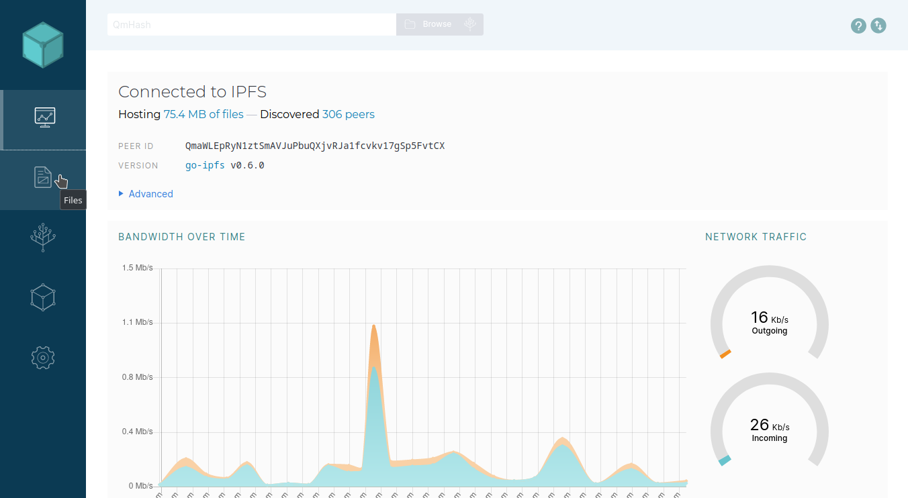

Сегодня мы опубликуем сайт в cyber. Для этого нам понадобится:
У нас имеется сайт, состоящий из файла в index.html и папки с изображениями.
Для начала нам необходимо загрузить наш сайт в IPFS. Для этого заходим в IPFS и переходим в наши файлы.
Нажимаем Import и выбираем Folder для загрузки папки с нашим сайтом.

Когда наш сайт загружен, копируем его CID, нам он понадобится для создания cyberlink.
CID моего сайта QmaoRL8GgkVQvRDSGsnUNfEukMVC7Egc5sDEB8oXEZTr4h, у вас будет другой. Теперь мы можем создать cyberlink. Для этого я буду использовать cyberdcli. Вы можете использовать любой другой способ создания cyberlink.
Making your first cyberlink
Using a ledger to create cyberlinks
Я буду создавать cyberlink на слово cyber. CID cyber: QmRX8qYgeZoYM3M5zzQaWEpVFdpin6FvVXvp6RPQK3oufV
Подтверждаем транзакцию
Мы создали cyberlink. Теперь мы можем найти наш сайт в поиске.

Happy Hacking!